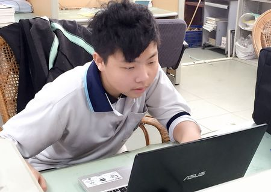
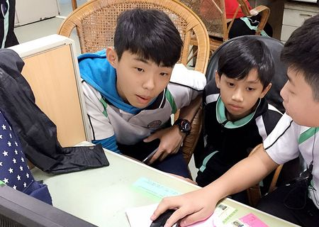
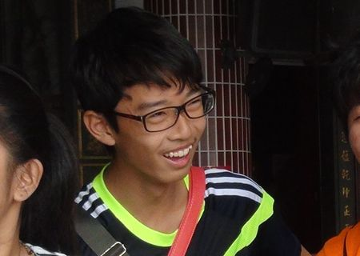
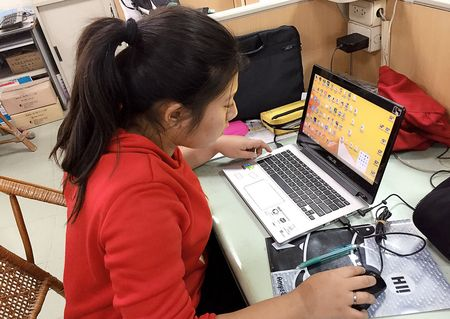
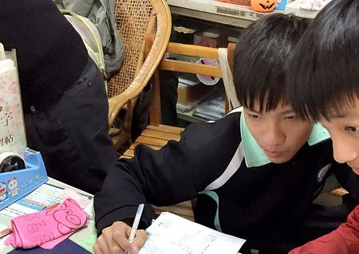
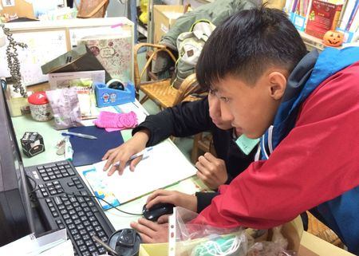
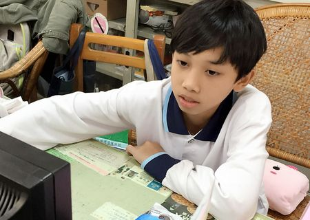
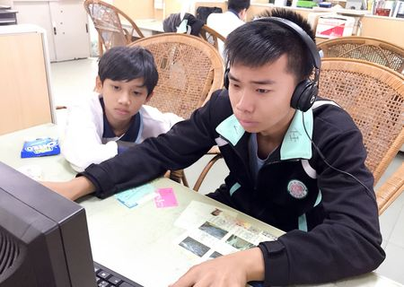
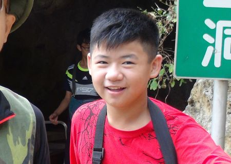

【省思】 | |
魏麒恩同學的省思我覺得這次我對這裡的歷史更了解，對自己的地方更進一步的了解，我應該多認識自己的地方社區，人不能夠忘本，不能夠連自己的地方社區都不了解；至於那個坑道，動用了五萬多人力才建成，真的是要心存感激；還我應該多出來走走認識地方認區，我太宅了哈哈，清水巗這麼好的爬山好去處，我，不讓自己宅在家裡，這讓我真的學到好多。 |
 |
|  | 張簡澤丞同學的省思自己有的台語聽不懂會害導遊要一直重複覺得非常的不好意思，覺得很抱歉，還有到清水巖時發現自己穿的是拖鞋，害同學的動作變得遲緩，這也讓我很抱歉，我覺得這一趟旅行非常的有意義，這趟旅行讓我學習到許多，我學到了許多的傳奇故事和歷史文化，還有說要一人拍一張，後來因為太忙，所以也沒有拍了。 |
曾子瑝同學的省思在打報告的過程中有發生事情，之後我們有把它給補回來，再來是拍攝的時候有同學不小心跌倒，讓我們好好記住，要好好的走路，不要東張西望,在訪談的時候，導覽員在說台語，可是我們都聽不懂，之後要好好的學習台語。 雖然聽不太懂但是也有請會說台語的同學幫忙我們,現在真的知道學習的重要 現在要好好學習台語,任何語言都一樣。 |
 |
|  | 蔡佳惠同學的省思我們那天去林園清水巖，剛開始我們去那邊都很乖，但到最後真的忍不住太陽的炎熱，所以我們就慢慢地的越來越暴躁聽不下去，幸好最後大家有忍住沒有說什麼不太好聽的話，還有那個解說員有給我們拿麵包餵食池塘裏面的那些可愛又大隻的魚，然後大家都心平氣和地對待那個解說員，讓我們最後可以讓他有一個美好的心情對待我們讓他繼續帶我們去看更多奇特的古蹟和以前古人留下來的東西。 |
李昶修同學的省思早知如此那天就跟大家一起去探訪林園清水嚴了，這樣就可以知道清水嚴的樂趣了，以後如果還有機會的話我就要跟他們一起去探訪。 因為去的話，我也可以跟那些有去的同學一樣知道那些古蹟的由來。 當初我一直以為去那邊只不過在聽別人在那裡碎碎念一些有的沒的，但其實並不是碎碎念，是在那邊曾廣見聞知道古蹟的由來以及我們所不懂的知識。 我後悔了，我後悔當時沒能參加林園清水嚴，我若去的話，我就能與同學們一起參觀，一起增廣見聞，並一起享受餵魚的樂趣。 同學們去的時候，我就在家裡時不時想像著林園清水嚴的風景和同學們興奮不已的表情。 我真後悔。 |
 |
|  | 張簡昌逸同學的省思我們那天去林園清水嚴，剛開始我們去那邊都很乖，但最後卻忍不住太陽的酷熱，所以我們就慢慢地越來越暴躁聽不下去，幸好最後大家有忍住沒有說甚麼不好聽的話，還有那個解說員有給我們拿麵包餵食池塘裏面的那些可愛又大隻的魚，然後大家都心平氣和地對待那個解說員，讓我們最後可以讓他有一個美好的心情對待我們讓他繼續帶我們去看更多古蹟。 |
黃培倫同學的省思在打報告的過程中有發生事情，之後我們有把它給補回來，再來是拍攝的時候有同學不小心跌倒，讓我們好好記住，要好好的走路，在訪談的時候，導覽員在說台語，但是我們都聽不懂，之後要好好的學習台語，這也讓我很抱歉，我覺得這一趟旅行非常的有意義，這趟旅行讓我學習到許多，我學到了許多的傳奇故事和歷史文化。 |
 |
|  | 陳美任同學的省思這次的訪談我們是第一次,雖然談不上專業但也不是「黑罐子裝醬油」訪談要用到的器具,都有想到,唯一可惜的就是時間太少的,向隧道原本想一直直走下去,可就是時間太少了,我們才走一段路就已經中午時十一二點了,還有就是我們是第一次,難免會有點想要脫韁野馬一樣,還有就是欠缺體力,希望下次可以更專業一點，很感謝老師。 |
陳傑諺同學的省思那天在爬完龍蟠洞之後，接著拍攝景點，我不小心摔倒了，很謝謝同學們幫我，關心我，之後寒假的時候，他們就到學校做報告.剪影片；我因為家裡交通關係，沒辦法到學校跟他們一起做，當時真的很怕他們生氣，因為我都沒有幫忙，所以很謝謝他們也辛苦他們了，也謝謝老師在一次給我機會，讓我有工作完成。 |
 |